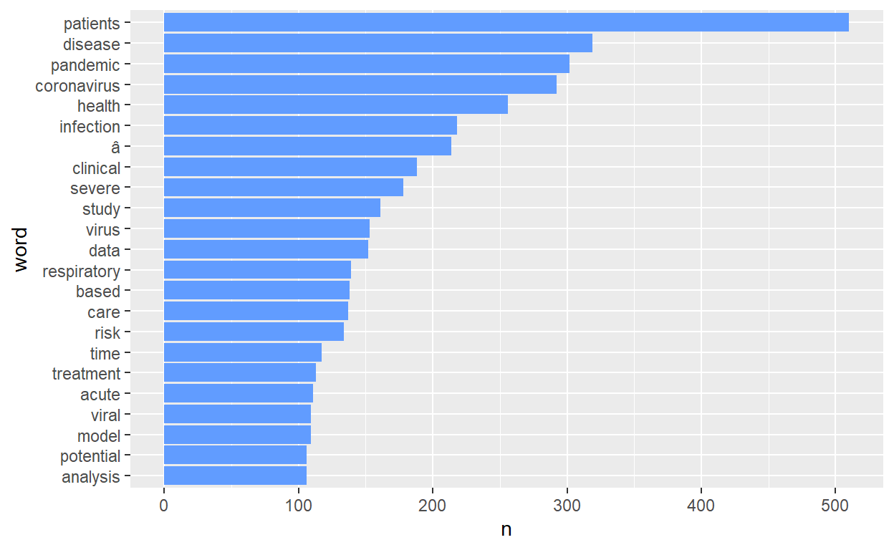
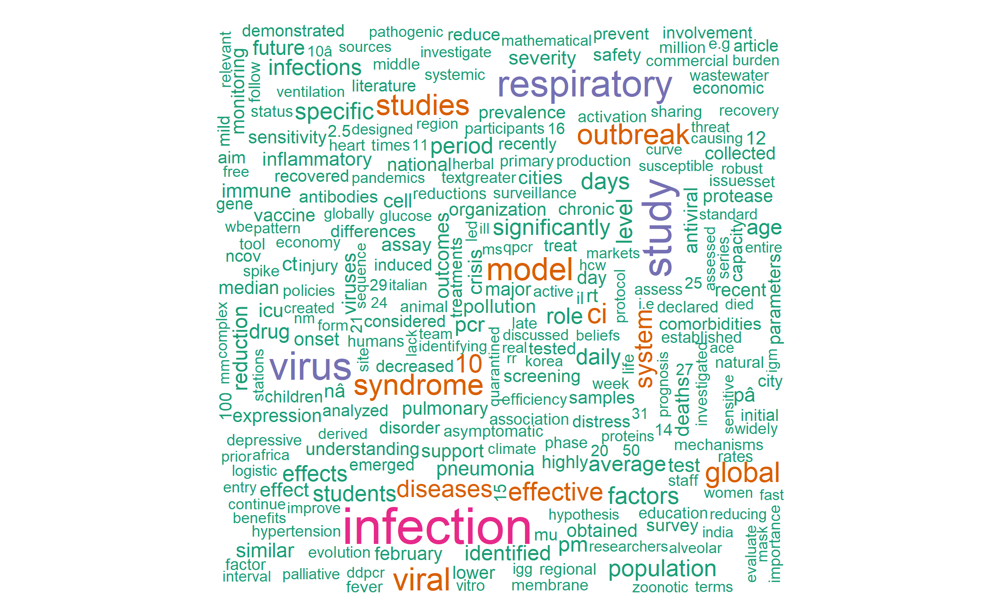
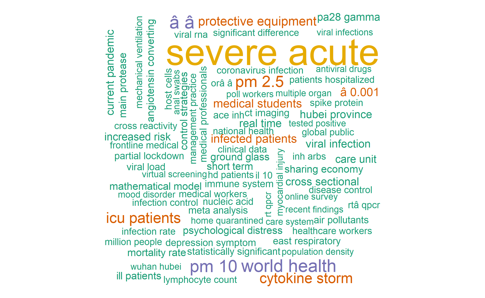
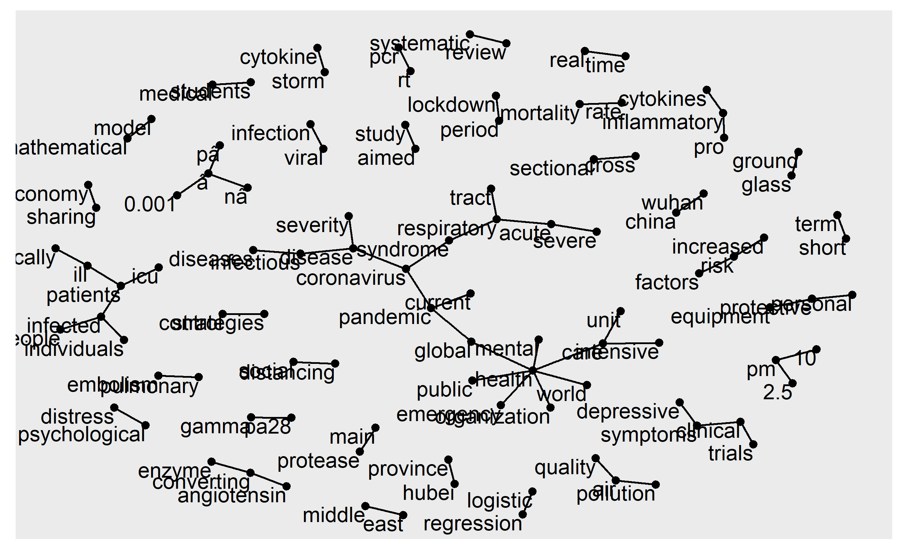
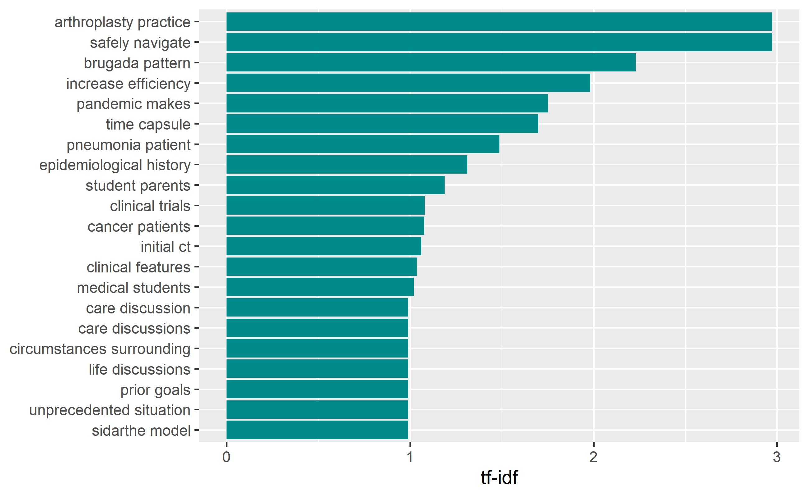

This blog post is a continuation of my previous blog post on applications of text mining on sampled COVI19 publications.
For this analysis, I need the following packages
library(dplyr) #for data management
library(ggplot2) #for plotting
library(tidytext) #for text mining
library(bib2df) #for converting bib file to data frame
library(wordcloud) #for plotting most frequent wordsLet’s import our bibliographic data using bib2df package as described in my previous blog post
library(bib2df)
covid19 <- bib2df("covid19.bib")As usual, let’s have a quick glimpse of our data.
glimpse(covid19)
Rows: 601
Columns: 32
$ CATEGORY <chr> "MISC", "ARTICLE", "ARTICLE", "ARTICLE", "MI...
$ BIBTEXKEY <chr> "Gelzinis2020", "Coccia2020", "Ataguba2020",...
$ ADDRESS <chr> NA, NA, NA, NA, NA, NA, NA, NA, NA, NA, NA, ...
$ ANNOTE <chr> NA, NA, NA, NA, NA, NA, NA, NA, NA, NA, NA, ...
$ AUTHOR <list> ["Gelzinis, Theresa A", "Coccia, Mario", <"...
$ BOOKTITLE <chr> "Journal of cardiothoracic and vascular anes...
$ CHAPTER <chr> NA, NA, NA, NA, NA, NA, NA, NA, NA, NA, NA, ...
$ CROSSREF <chr> NA, NA, NA, NA, NA, NA, NA, NA, NA, NA, NA, ...
$ EDITION <chr> NA, NA, NA, NA, NA, NA, NA, NA, NA, NA, NA, ...
$ EDITOR <list> [NA, NA, NA, NA, NA, NA, NA, NA, NA, NA, NA...
$ HOWPUBLISHED <chr> NA, NA, NA, NA, NA, NA, NA, NA, NA, NA, NA, ...
$ INSTITUTION <chr> NA, NA, NA, NA, NA, NA, NA, NA, NA, NA, NA, ...
$ JOURNAL <chr> NA, "The Science of the total environment", ...
$ KEY <chr> NA, NA, NA, NA, NA, NA, NA, NA, NA, NA, NA, ...
$ MONTH <chr> "sep", "aug", "dec", "sep", "dec", "nov", "s...
$ NOTE <chr> NA, NA, NA, NA, NA, NA, NA, NA, NA, NA, NA, ...
$ NUMBER <chr> "9", NA, "1", NA, "1", NA, NA, "1", NA, NA, ...
$ ORGANIZATION <chr> NA, NA, NA, NA, NA, NA, NA, NA, NA, NA, NA, ...
$ PAGES <chr> "2328--2330", "138474", "1788263", "312--321...
$ PUBLISHER <chr> NA, NA, NA, NA, NA, NA, NA, NA, NA, NA, NA, ...
$ SCHOOL <chr> NA, NA, NA, NA, NA, NA, NA, NA, NA, NA, NA, ...
$ SERIES <chr> NA, NA, NA, NA, NA, NA, NA, NA, NA, NA, NA, ...
$ TITLE <chr> "Thoracic Anesthesia in the Coronavirus Dise...
$ TYPE <chr> NA, NA, NA, NA, NA, NA, NA, NA, NA, NA, NA, ...
$ VOLUME <chr> "34", "729", "13", "117", "9", "110", "83", ...
$ YEAR <dbl> 2020, 2020, 2020, 2020, 2020, 2020, 2020, 20...
$ DOI <chr> "10.1053/j.jvca.2020.05.008", "10.1016/j.sci...
$ ISSN <chr> "1532-8422 (Electronic)", "1879-1026 (Electr...
$ LANGUAGE <chr> "eng", "eng", "eng", "eng", "eng", "eng", "e...
$ PMID <chr> "32406428", "32498152", "32657669", "3254687...
$ ABSTRACT <chr> NA, "This study has two goals. The first is ...
$ KEYWORDS <chr> NA, "Air Pollutants,Air Pollution,Betacorona...
dim(covid19) #601 documents and 32 variables
[1] 601 32Once you read the file, it will be saved in our enviroment as data frame and we can do our analysis. As usual, the first part of the analysis is doing some descriptives and visualizing the data. We will then move to tokenization steps. Token is meaningful unit of unit of a text. This meanigful unit is represented by a word or a term. It is the unit that text analysts are interested in doing their analzsis. The process of breaking down a text to set of tokens is known as tokenization. For example
Text: “COVID19 is the biggest global health crisis of the modern world”. In this text, the tokens are each word. In the tokenization process, each of these words are written in a separate columns(variable) as follows.
In tokenization process, the text documents is changed to tokens and each token is counted.
| Text | COVID19 | is | the | biggest | global | health | crisis | of | the | modern | world |
|---|---|---|---|---|---|---|---|---|---|---|---|
| COVID19 is the biggest global health crisis of the modern world | 1 | 1 | 1 | 1 | 1 | 1 | 1 | 1 | 1 | 1 | 1 |
In tokenization process, the text documents is changed to tokens and each token is counted. Notice “the” is mentioned twice. So, we can count it and reshuffle our table as fllows.
| Text | COVID19 | is | the | biggest | global | health | crisis | of | modern | world |
|---|---|---|---|---|---|---|---|---|---|---|
| COVID19 is the biggest global health crisis of the modern world | 1 | 1 | 2 | 1 | 1 | 1 | 1 | 1 | 1 | 1 |
The next thing after tokenization is removing irrelevant words. These are words that don’t give much information to the concept of the document other than making the grammatical structure of the document. The stp_words data has about 1150 irrelevant words. These words can be easily removed using the dyplyr ant_join function.
We have enough of theory. Let’s move to the more technical things. As we did in the previous blog, we will only need journal articiles having no missing data on their abstract variable.
library(dplyr)
covid19new <- covid19 %>%
filter(!is.na(ABSTRACT)) #remove all records with missing abstracts
table(covid19new$CATEGORY) #382 are journal articles with no missing abstract
ARTICLE MISC
382 60
# Filter journal articles having abstracts
covid19new <- covid19new %>%
filter(CATEGORY=="ARTICLE")
#Check
table(covid19new$CATEGORY) #382 journal articles
ARTICLE
382
# select few variables from our data set
data <- covid19new %>%
select("TITLE", "ABSTRACT", "KEYWORDS", "AUTHOR")To start with the tokenization process, we will load stop_words data. We can also add our own stop stop words. In text mining, words on both sides of extreme frequency are no relevant. These words can be removed by creating a customized list of stop_words. Since we are doing our text analysis on journal articles, words that are obviously common in each of the abstracts can be removed. Structured abstracts usually contain “Introduction” or “background”, “Methods”, “Results” and “conclusions”. These and other words can be removed. The custom stop words can also include “covid”, since all of them are about “covid”. There is also a way to remove numbers from our corpus. For now, we will not remove all numbers.
data(stopwords)
custom_stop_words <- bind_rows(tibble(word=c("covid", "covid19","covid-19", "sars", "sars", "cov", "background", "introduction","aims", "objectives", "materials", "methods", "results", "conclusions","textless", "0", "1","2", "3", "4", "5", "6", "7", "8", "9","19", "2019", "2020", "95"),
lexicon = c("custom")),
stop_words)
tidy_covid_data <- data %>%
unnest_tokens(input=ABSTRACT, output=word) %>%
anti_join(stop_words) %>%
anti_join(custom_stop_words)
dim(tidy_covid_data) # 40669 tokens, 4 variables
[1] 40647 4
tidy_covid_data %>%
count(word, sort=T) %>%
filter(n>100) %>%
mutate(word=reorder(word, n)) %>%
ggplot(aes(x=word, y=n)) +
geom_col(fill="#619CFF") + coord_flip()
library(wordcloud)
pal <- brewer.pal(8, "Dark2")
tidy_covid_data %>%
count(word) %>%
with(wordcloud(word, n, max.words=700, colors = pal))
The relationship between words can be vizualized in a netork graphs after tokenizing using n-grams. n-grams is breaking a text in two-, three or n-number of word tokens.
For now, we will only see bigrams(two-word tokens). Two word tokens can be represented as follows
text1: “How dangerous is COVID19?”
text 2: “How dangerous is COVID19 pandemic.?”
| Text | how dangerous | dangerous is | is covi19 | covid19 pandemic |
|---|---|---|---|---|
| How dangerous is COVID19? | 1 | 1 | 1 | 0 |
| How dangerous is COVID19 pandemic | 1 | 1 | 1 | 1 |
As we did previously, lets’s do the tokenization once again again. This time usigng bigrams.
covid_bigram <- data[, c(1,2,3)] %>% #selct only titles, abstracts and keywords column of the data. Title is saved
unnest_tokens(output=bigram,
input=ABSTRACT,
token="ngrams", n=2)
dim(covid_bigram) # 79404 bigrams, 3 variables
[1] 79404 3Let’s see the most frequent bigrams. Notice the irrelvant words.
head(
covid_bigram %>%
count(bigram, sort = TRUE)
)
# A tibble: 6 x 2
bigram n
<chr> <int>
1 covid 19 989
2 of the 571
3 sars cov 443
4 cov 2 401
5 in the 384
6 of covid 212
library(tidyr)
covid_bigrams_separated <- covid_bigram %>%
separate(bigram, c("word1", "word2"), sep = " ")
covd_bigrams_filtered <- covid_bigrams_separated %>%
filter(!word1 %in% stop_words$word) %>%
filter(!word2 %in% stop_words$word) %>%
filter(!word1 %in% custom_stop_words$word) %>%
filter(!word2 %in% custom_stop_words$word)
dim(covd_bigrams_filtered) # 18981 bigrams, 4 variables
[1] 18963 4
covd_bigrams_filtered_counts <- covd_bigrams_filtered %>%
count(word1, word2, sort = TRUE)
head(covd_bigrams_filtered_counts)
# A tibble: 6 x 3
word1 word2 n
<chr> <chr> <int>
1 coronavirus disease 95
2 acute respiratory 78
3 respiratory syndrome 75
4 severe acute 68
5 syndrome coronavirus 54
6 public health 49As you can see from the dim( ) call, the tokenization process changed the abstract of the 382 documents to 41000 tokens. That means we have 382 observations and 41000 one word columns. In the bigram tokenization, we have about 19000 bigrams for our 382 abstracts.
Now, let’s join the separated bigrams.
covid_bigrams_united <- covd_bigrams_filtered %>%
unite(bigram, word1, word2, sep = " ")
covd_bigrams_joined_counts <- covid_bigrams_united %>%
count(bigram, sort = TRUE)
head(covd_bigrams_joined_counts)
# A tibble: 6 x 2
bigram n
<chr> <int>
1 coronavirus disease 95
2 acute respiratory 78
3 respiratory syndrome 75
4 severe acute 68
5 syndrome coronavirus 54
6 public health 49
#Let's visualize 150 most common words
library(wordcloud)
pal <- brewer.pal(8, "Dark2")
covid_bigrams_united %>%
count(bigram) %>%
with(wordcloud(bigram, n, max.words=150, colors = pal))
The word cloud above shows, “severe acute”, “wuhan china”, “air pollution”, “rt pcr”, “personal protective”, “cytokine storm” and “social distancing” as most common bigrams in the covid19 publications included in this analysis.
library(igraph)
library(ggplot2)
bigram_graph <- covd_bigrams_filtered_counts %>%
filter(n > 8) %>% #words mentioned more than 8 timse
graph_from_data_frame()
bigram_graph
IGRAPH 0e07d00 DN-- 103 70 --
+ attr: name (v/c), n (e/n)
+ edges from 0e07d00 (vertex names):
[1] coronavirus->disease acute ->respiratory
[3] respiratory->syndrome severe ->acute
[5] syndrome ->coronavirus public ->health
[7] health ->care nâ ->â
[9] mental ->health air ->quality
[11] â ->â rt ->pcr
[13] world ->health health ->organization
[15] pm ->10 air ->pollution
+ ... omitted several edges
library(ggraph)
set.seed(2017)
ggraph(bigram_graph, layout = "fr") +
geom_edge_link() +
geom_node_point() +
geom_node_text(aes(label = name), vjust = 1, hjust = 1)
Term frequency inverse document frequency (tf-idf) is a weighted numerical representation of how a certain word is important in a document. It is calculated using the following formula. tf_idf can be done for the one word columns. For now, let’s just do for bigrams instead.
\[tfidf( t, d, D ) = tf( t, d ) \times idf( t, D )\] \[idf( t, D ) = log \frac{ \text{| } D \text{ |} }{ 1 + \text{| } \{ d \in D : t \in d \} \text{ |} }\]
Where t is the terms appearing in a document; d denotes each document; D denotes the collection of documents.
covid_bigram_tf_idf <- covid_bigrams_united %>%
count(TITLE, bigram) %>%
bind_tf_idf(bigram, TITLE, n) %>%
arrange(desc(tf_idf))
head(covid_bigram_tf_idf)
# A tibble: 6 x 6
TITLE bigram n tf idf tf_idf
<chr> <chr> <int> <dbl> <dbl> <dbl>
1 Arthroplasty during the COVID~ arthroplast~ 1 0.5 5.95 2.97
2 Arthroplasty during the COVID~ safely navi~ 1 0.5 5.95 2.97
3 COVID-19 Reveals Brugada Patt~ brugada pat~ 3 0.375 5.95 2.23
4 Neutrophils and COVID-19: Not~ increase ef~ 1 0.333 5.95 1.98
5 Neutrophils and COVID-19: Not~ pandemic ma~ 1 0.333 5.25 1.75
6 COVID-19 Time Capsule 1: DATE~ time capsule 2 0.286 5.95 1.70
covid_bigram_tf_idf %>%
arrange(desc(tf_idf)) %>%
mutate(bigram = factor(bigram, levels = rev(unique(bigram)))) %>%
top_n(15) %>%
ggplot(aes(bigram, tf_idf)) +
geom_col(show.legend = FALSE, fill="cyan4") +
labs(x = NULL, y = "tf-idf") +
coord_flip()
The above tf_idf plot shows, “athroplasyty practice”, “safely navigate”, “brugada pattern”, etc were bigrams having the highest tf_idf values.
That is all for today.
Next stop: Clustering text data
For attribution, please cite this work as
Kebede(PhD) (2020, Aug. 11). Aspire Data Solutions: Applying text analyses methods on 382 COVID19 journal articles. Retrieved from http://www.mihiretukebede.com/posts/2020-08-10-2020-08-10-text-analysis-of-covid-publications/
BibTeX citation
@misc{kebede(phd)2020applying,
author = {Kebede(PhD), Mihiretu},
title = {Aspire Data Solutions: Applying text analyses methods on 382 COVID19 journal articles},
url = {http://www.mihiretukebede.com/posts/2020-08-10-2020-08-10-text-analysis-of-covid-publications/},
year = {2020}
}